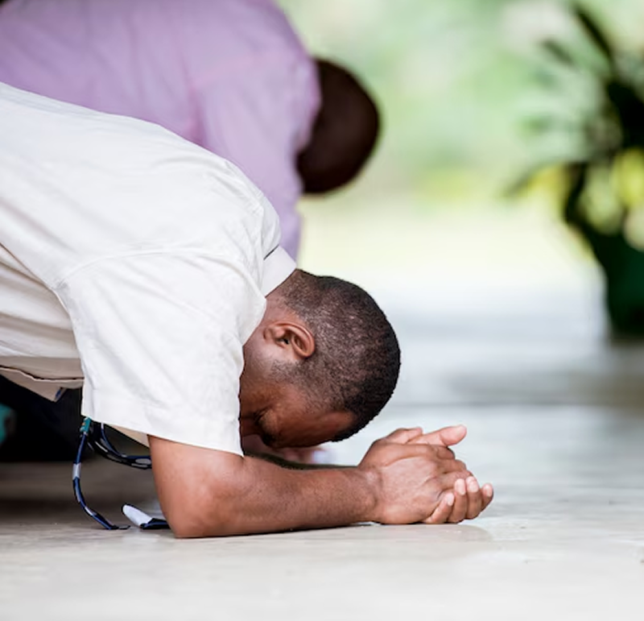
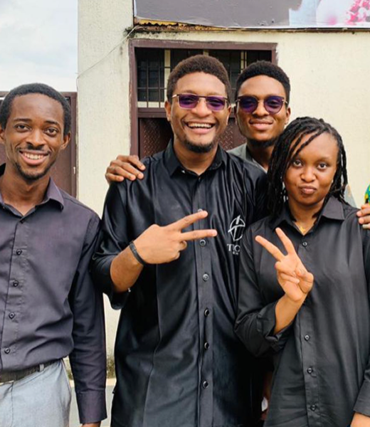

MODEL. STRATEGIC. UNLIMITED
A Model Church For Intentional
Discipleship And Limitless
Living In Christ.

Who We Are
At Tupos Church, we exist to raise sons unto
glory — a generation of believers who live as
true reflections of Christ. “Tupos” is the Greek
word for model or example, and that’s exactly
who we’re called to be: patterned after Christ,
filled with the Word, and led by the Spirit.
We disciple intentionally, worship
passionately, and live strategically, reaching
people across cities, campuses, and the
digital space.
Our Vision & Mission
Vision:
To raise mature sons who reveal God's
in every sphere of life.
Mission:
To disciple and equip believers through
strategic teaching, intentional community,
and unlimited expression—so they grow into
living models of Christ.

Upcoming Event
THE SONS’ GATHERING 2025
Date: August 9–11
Theme:“Saved, Sealed and Sanctified”
Location: Lagos + Online
Join us for our annual conference where sons
gather to be refreshed, taught, and ignited for
kingdom influence.

Teachings & Resources
Feed your spirit with our library of Word-based teachings:
The Basics of Biblical Interpretation
- listen
.png)
Jesus and Relationships
- listen
.png)
Understanding Sonship
- listen
Join the Family
Whether you're a student, creative, orprofessional—there’s space for you here.
Tupos isn’t just a church—it’s a family, a
model, and a movement.
Ready to grow in God?
